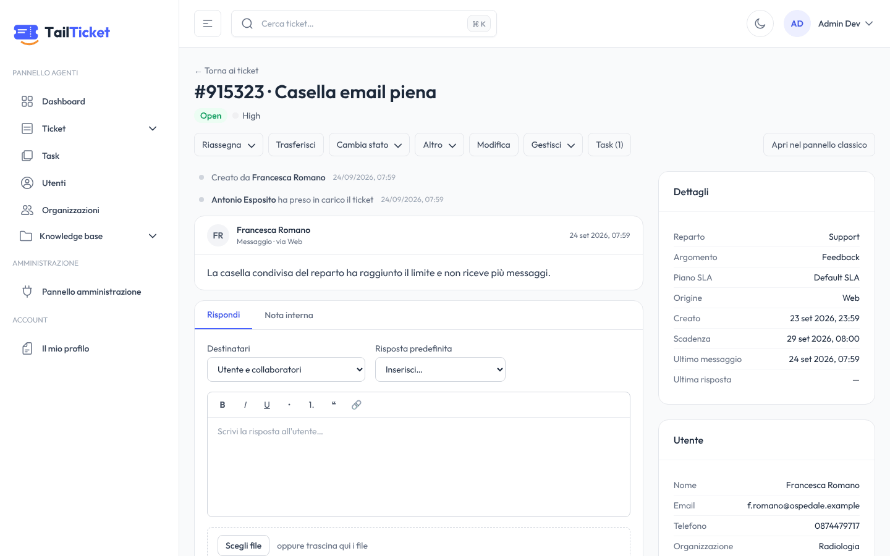
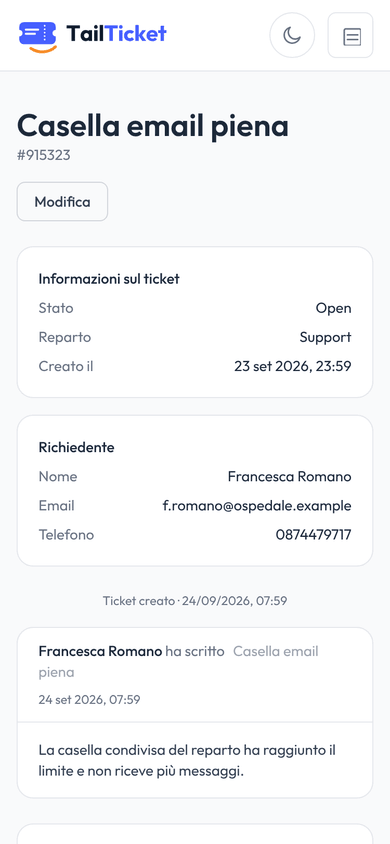
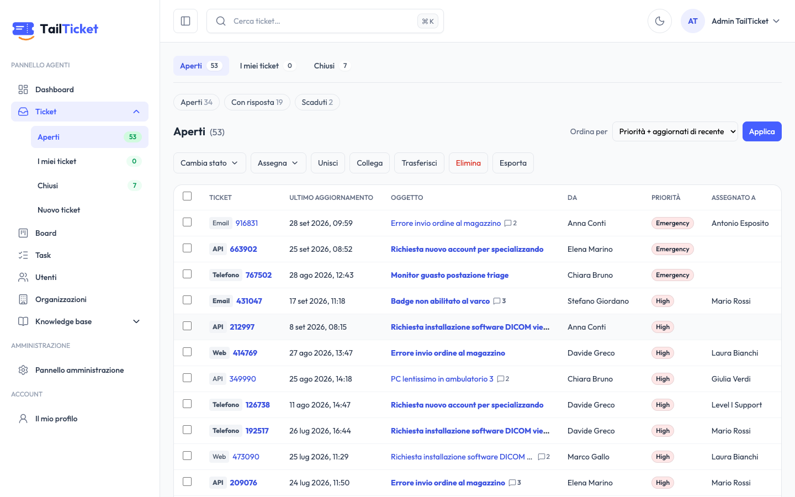
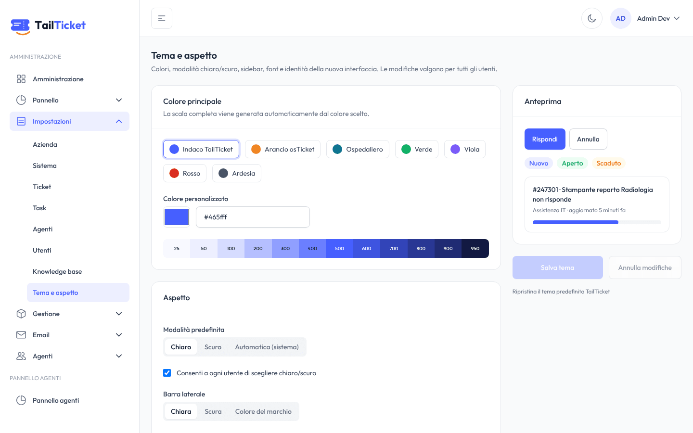
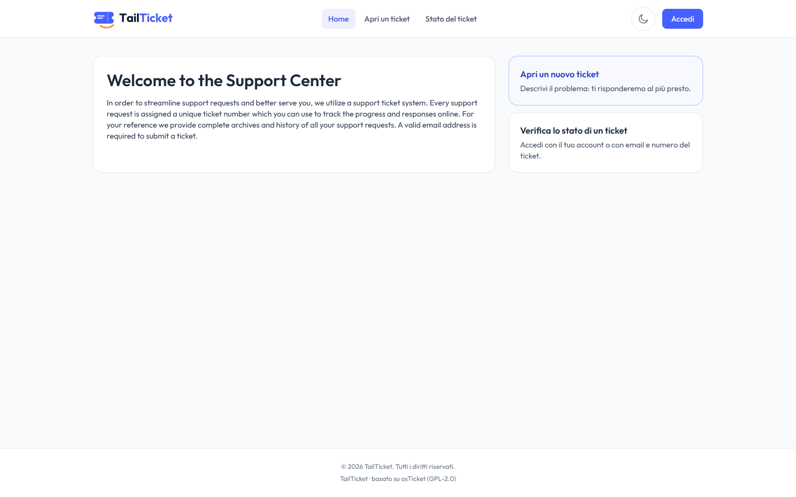
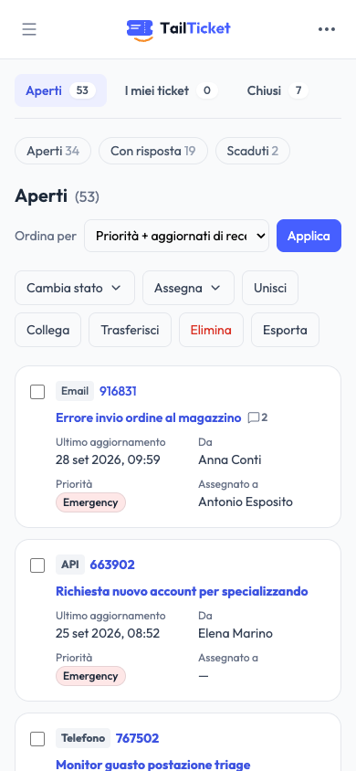
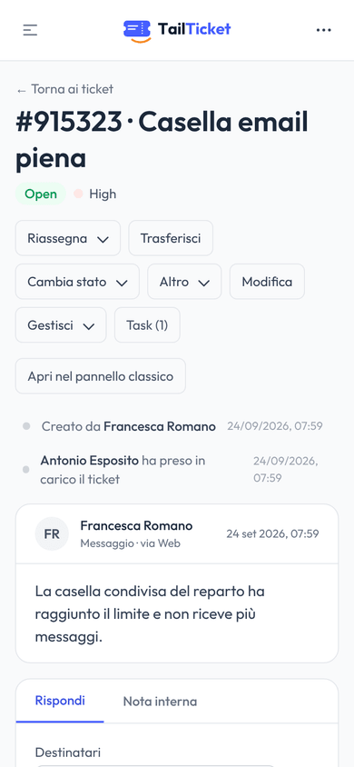
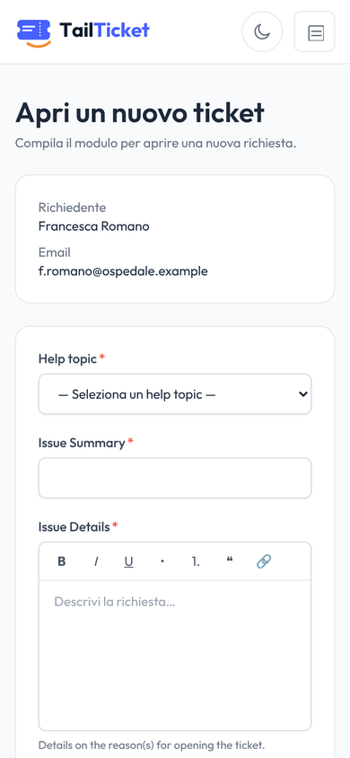
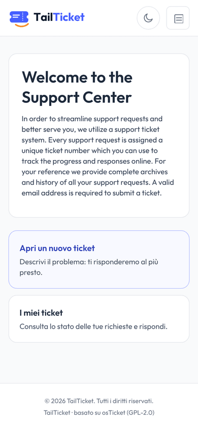

Fork di osTicket 1.18 · GPL v2
osTicket funziona. Ora si vede.
TailTicket dà a osTicket un'interfaccia nuova: responsive, brandizzabile, in italiano e inglese. Usa lo stesso database, senza tabelle nuove né migrazioni, e il pannello classico continua a funzionare accanto.
- 351 test differenziali PHP vs TypeScript
- 0 righe di DDL
- Deploy Docker con HTTPS


Perché
Un motore solido dietro un'interfaccia del 2008
osTicket è in produzione da quasi vent'anni in migliaia di organizzazioni: email in ingresso, SLA con orari e festività, code, form dinamici, permessi. Ma le pagine PHP con jQuery sono poco usabili da telefono, difficili da brandizzare e lontane da ciò che agenti e clienti si aspettano oggi.
Strada 1
Riscrivere da zero
- si perdono anni di comportamenti consolidati
- migrazione dei dati rischiosa
- nessun ritorno indietro
Strada 2
Restare così
- esperienza datata per agenti e clienti
- niente mobile
- brand osTicket ovunque
La strada di TailTicket
Tenere il cuore, rifare la faccia
- stesso DB, stessi dati, stessa logica
- nuova interfaccia, adottabile un pezzo alla volta
- aggiornamenti di osTicket ancora possibili
La soluzione
Due interfacce, un solo database
TailTicket porta la logica di dominio di osTicket in TypeScript, riga per riga, e la verifica contro il PHP originale. Ciò che non riscrive resta a osTicket, che gira accanto.
| osTicket classico | TailTicket | |
|---|---|---|
| Database | MySQL/MariaDB di osTicket | lo stesso, senza tabelle nuove né migrazioni |
| Logica di dominio | PHP in legacy/ | porting TypeScript, verificato contro il PHP |
| Interfaccia | PHP + jQuery | Next.js 16, React 19, Tailwind v4: responsive, tema chiaro/scuro |
| Agenti, admin, portale | pannello classico in /classic/ | riscritti: /agent, /admin, / |
| Cron, email, API, plugin | osTicket | restano a osTicket |
Cosa c'è dentro
Pannello agenti, amministrazione e portale clienti

- Code e ricercacode di sistema e personali, filtri, ordinamenti, ricerca avanzata
- Vista ticketrisposta, note interne, allegati, risposte predefinite, collaboratori
- Azioniassegnazioni, trasferimenti, referral, merge e link, azioni di massa, export CSV
- Il resto del lavorotask, utenti e organizzazioni, knowledge base, profilo con 2FA

- Impostazionisistema, ticket, task, utenti, agenti, KB, allegati
- Organizzazionereparti, help topic, SLA, orari, agenti, team, ruoli
- Canaliaccount email, template, filtri, form, liste, pagine, chiavi API
- Tema e brandcolori, nome, font, preset: senza toccare codice

- Accessologin, registrazione, accesso ospite con numero di ticket ed email
- I miei ticketelenco, conversazione, risposte con allegati
- Apertura tickethelp topic con form dinamici, come in osTicket
- Link vecchigli URL del portale classico nelle email già inviate portano alle nuove pagine
Responsive davvero
Si risponde anche dal telefono
Ogni pagina è pensata anche per lo smartphone, non solo ridotta:
- l'elenco dei ticket diventa a schede;
- le azioni restano a portata di pollice;
- il cliente apre un ticket in pochi tocchi.




Compatibilità
Il database è un contratto
Chi ha osTicket in produzione ha lì i propri dati. TailTicket non cambia lo schema e scrive esattamente le righe e le email che scriverebbe il PHP. Non lo diciamo e basta: lo verifichiamo.
TEST DIFFERENZIALE · CI
PHP originale contro TailTicket
- Versione osTicket
- 1.18.4
- Scenari di scrittura
- 351
- Confronto
- tutte le tabelle + email
- DDL sul database
- 0
- Configurazione propria
nextui.*
Stessa operazione, due copie del DB
Ogni scrittura (risposta, assegnazione, creazione ticket, impostazioni admin…) viene eseguita dal codice PHP originale e da TailTicket, partendo dallo stesso stato.
Confronto riga per riga
Si confrontano tutte le tabelle e le email catturate da Mailpit. Una sola differenza fa fallire la CI.
Schema verificato o sola lettura
All'avvio TailTicket legge
core.schema_signature. Se un aggiornamento di osTicket porta uno schema non ancora verificato, smette di scrivere. Il pannello classico continua a funzionare finché non arriva la versione che lo supporta.Upstream sempre importabile
Il PHP vive intatto in
legacy/e gli aggiornamenti si importano congit merge -X subtree=legacy upstream/develop.
Deploy
Tutto lo stack in un comando
Docker Compose avvia TailTicket, osTicket classico con il suo cron, MariaDB e un proxy Caddy con HTTPS automatico. Al primo avvio installa osTicket nel database vuoto; ai successivi applica gli aggiornamenti di schema.
$ git clone https://github.com/paolo-trivi/tailticket tailticket $ cd tailticket/deploy $ ./tailticket init --domain helpdesk.example.com ▸ creato .env (dominio helpdesk.example.com, HTTPS auto) $ ./tailticket up ▸ avvio dello stack attendo db ok attendo osticket ok # installa osTicket nel DB vuoto attendo tailticket ok attendo proxy ok ▸ TailTicket è pronto Portale clienti https://helpdesk.example.com/ Pannello agenti https://helpdesk.example.com/agent Amministrazione https://helpdesk.example.com/admin Pannello classico https://helpdesk.example.com/classic/scp/ $ ./tailticket backup # DB, file e .env in un archivio $ ./tailticket update # backup, git pull, rebuild, upgrade
/→TailTicketportale clienti/agent · /admin→TailTicketpannello agenti e amministrazione/classic/→osTicketpannello classico, stessi utenti e dati/classic/api/→osTicketAPI REST e pipe delle email
Hai già osTicket in produzione? Con ./tailticket init --attach parte solo TailTicket, collegato al database esistente. Il PHP resta dov'è e continua a gestire cron, email e API.
Immagini pronte su GHCR: ghcr.io/paolo-trivi/tailticket e tailticket-legacy.
Filosofia
I principi con cui decidiamo
Rispetto per ciò che funziona
Il comportamento di osTicket si porta, non si reinventa. Le stranezze innocue si replicano e si annotano.
Il database è un contratto
Nessun DDL. Stesse righe, stesse email. Schema verificato o sola lettura.
Coesistenza
Le due interfacce girano insieme sugli stessi dati. Si adotta un pezzo alla volta e si torna indietro spegnendo un container.
Moderno dove conta
Mobile, chiaro e scuro, italiano e inglese, brand configurabile dall'admin.
Sicuro per default
CSP con nonce, cookie Secure, permessi ricontrollati sul server. I bug di sicurezza noti di osTicket non si replicano.
Facile da mettere in produzione
Installazione, HTTPS, backup e aggiornamenti fanno parte del pacchetto.
Verificabile e aperto
Ogni comportamento è documentato prima di essere scritto. GPL v2 come osTicket, con l'origine dichiarata e i limiti scritti.
Struttura del fork
Il nuovo accanto all'originale
Il codice di osTicket resta intatto in legacy/, così gli aggiornamenti upstream si importano senza conflitti. Tutto ciò che è nuovo vive fuori da quella cartella.
apps/web/ TailTicket: Next.js (agenti, admin, portale) legacy/ osTicket 1.18.x originale: cron, email, API deploy/ Docker Compose, Caddy, script ./tailticket docs/ filosofia, scope, architettura, brand └── reverse-engineering/ analisi di osTicket, doc 00–17 .github/ CI: qualità + 351 test differenziali, immagini
Dai nuova vita al tuo osTicket
Stessi dati, stesso motore, un'interfaccia che agenti e clienti useranno volentieri.